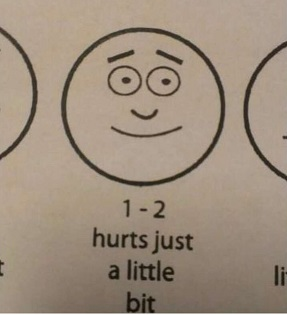

3 months later, it's time to close up Survey 2 and look at the results.
No pie charts this time! Pasting the tables directly from Excel saves me from uploading a bunch of images. üòåüòå
Users and platforms
| Operating System | Users |
|---|---|
| Windows | 31 |
| Linux | 28 |
| macOS | 4 |
| BusyBox | 1 |
| DSM | 1 |
| Unraid | 1 |
| Doesn't actually use LRR | 4 |
| Total | 70 |
I only got 70 replies to the survey this time, which I'm putting on account of the sadpanda death craze having died down. Way less "I didn't stick with your program because it sucks" replies, after all.
Github ⭐ count flew past 250 as well! I still like watching the counter go up even if it doesn't amount to anything.
| Install method and location | Users |
|---|---|
| Windows Installer - Server | 2 |
| Windows Installer - Local | 29 |
| Docker - Server | 21 |
| Docker - Local | 5 |
| Built it from source - Server | 6 |
| Built it from source - Local | 2 |
| Homebrew - Server | 0 |
| Homebrew - Local | 1 |
| Total | 66 |
The Windows/Linux users are now basically 50/50, which is unexpected! And validates the hours spent making a proper Windows installer, I guess.
I don't feel validated for the Homebrew port yet but I'm sure it'll come
Windows users mostly install on their local machine compared to Linux users jamming the thing into a secondary machine/server, which makes sense I suppose. (>using windows server)
Usage and external readers
| Preferred view mode | Users |
|---|---|
| Table view | 8 |
| Thumbnail view | 58 |
| Total | 66 |
Yeah, not surprising. I still love you, table view.
| External Readers used | Users |
|---|---|
| No, I only use the Web Reader | 49 |
| Tachiyomi Extension | 11 |
| Ichaival (Android) | 7 |
| LRReader (Windows) | 3 |
| OPDS | 0 |
The crowd clamoring for external reader support was only a vocal minority after all!

I'll just have to delude myself into thinking that the OPDS support is actually used.
Feature requests
ayyy here we go it's the featurebowl
| Feature | Users |
|---|---|
| Batch Tagging improvements | 35 |
| Script to attempt better duplicate detection | 34 |
| Deeper Category integration | 28 |
| Support for image folders alongside archives | 22 |
| Browser Extension to directly call the server's Downloaders | 20 |
| Better Out of Box Experience | 6 |
| Easier way to contribute to the source code | 5 |
I keep underestimating how much people use Batch Tagging considering I personally don't use it at all. üò• autoplugin on archive uploads covers my needs i am not a smart man
The improvements(default timeout values for plugins, fallback plugins) are quite easy but I'd like to extend the timeout functionality to autoplugin as well.
The duplicate script is a fun side-experiment and I wasn't expecting it to overtake the category stuff, so uh I'll do it I guess?
The one thing I personally want most is the browser extension as I already use Hydrus Companion a lot for single images, but that relies on downloaders and all the backend work they imply, which will probably take a while. Sorry!
I still want to do the OoB experience thing at some point, it's logical that existing users wouldn't care too much about it.
Image folders can die. üôÉ
Suggestion Box
Here are a few interesting messages I got from the feature suggestion box.
Sort by date added
Option to customize the columns of the table view.
sorting on thumbs view. remember sorting. sort by artists than by titles
Custom sortable columns in table view. Added Date
There is a long-standing issue on adding customizable sorting, but it's true that right now you can't sort at all using only the thumbnail view. I'll keep a note for that!
Manga bookmarks(i.e volumes with bookmarks for chapters)
This would be nice, but I'm not quite sure how to implement it. Specific tags would work but that's a bit of a slippery slope.
Improved built in front-end user interface
As soon as AI gets good enough at creating React applications, I promise I'll use LRR as a testbed for it.
Category view. Category thumbnails are 1st manga thumbnail
the ability to link archives in a series together that doesnt require creating a category button on the UI
Category buttons are a bit unwieldy and I'd like to have a dedicated category view with thumbnails as well.
The Javascript on the Index is a bit spaghettish and I dread having to work on it though üò∂
EPUB support, images could be generated dynamically. Probably a huge pain to handle all the different EPUB formats though :/
I'm actually adding this in 0.7.1 after looking it up a bit - No text handling tho so support is quite limited unless you use an external client.
An add/edit/remove tag API on an arcid basis so that external clients can set/unset tags.
That's also in 0.7.1!
Mao themes plz
This one suggestion drives me crazy. Which Mao is this guy talking about? Mao Zedong, or the chairman from Futabu? Did he just heavily typo "More themes"? The possibilities are endless.
Server side read status/progress to sync between devices
Plugins&scripts that execute On-read/After-reading a manga i.e update extrernal manga trackers when a volume/chapter is read
Syncing reading progression is a good feature, I left it client-side originally so that it made sense with multiple users on the server, but I think this is a very minor use-case compared to one user accessing his stuff on multiple devices.
Guess I'll do it!
An easy way to edit (mainly crop) archive thumbnail, currently i dupe the cover-crop-insert into zip arch usually as file 000 for preservation
This one is more of a support thing, but I think you'd be better off editing the generated thumbnails directly instead of modifying the archive, since that leads to the ID changing.
Cropping from the server would be possible with magick but that's really way too niche to implement.
An option for when opening an archive to, instead of opening the last read or first image, to open a page showing all of the archive's thumbnails allowing you to go directly to a specific image, sort of like EHentai and similar sites.
Integrate the tags and thumbnail view when selecting an archive like eH has it.
When selecting an archive, it would be very nice to first be presented with a summery of the tags and the thumbnail images, just like how E-H does it. Would make it much easier to manage and also jump to the page you want with much less clicks.
Just hit Ctrl when the reader loads to see all the pages at once.
I'll agree that the reader currently doesn't have metadata shown anywhere, but I don't think that'd be very useful without a way to proc searches by clicking on tags. (See below)
Middle click on tag :>
Should encode query into the url bar
Those kinda go together in that implementing 2 makes 1 possible.
An Opening script, or a config file, since remembering the full Docker command to start can be hard sometimes, specially when your machine didn't save it.
Wait, that's just docker-compose! You can also consider using Portainer if you want an easier GUI interface.
Bugfixes
I will try my best. üôá‚Äç‚ôÇÔ∏è
Finishing up
I can't put all the replies up in one article, but all your thank-yous are very much appreciated!
I'm currently working on other things so LRR is a bit on the backburner for the time being, but I'll certainly try to get some dev juice flowing for the next GH Hacktoberfest. (gotta get them stickers fam)
Until then, please enjoy the new 0.7.1 release.
*mic drop*